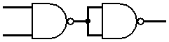
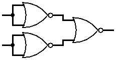

| Logic |
If all the inputs are 1 (HIGH / TRUE), then output will be 1 (HIGH / TRUE), otherwise the output will be 0 (LOW / FALSE).
|
| Number of inputs/outputs |
Multiple inputs, Single output
|
| Logic Symbol |
\(\cdot\) (dot)
e.g. \(Y = A \cdot B\)
|
Logic Diagram
(For 2 inputs) |
|
Truth table
(For 2 inputs) |
| \(A\) |
\(B\) |
\(Y = A \cdot B\) |
| 0 | 0 | 0 |
| 0 | 1 | 0 |
| 1 | 0 | 0 |
| 1 | 1 | 1 |
|
| Integrated Circuits |
| Number of Inputs |
IC Number |
| Two Inputs |
7408, 7409, 4081 |
| Three Inputs |
7411, 7415, 4073 |
| Four Inputs |
7421, 4082 |
|
| AND gate using universal gates |

Using NAND gates |

Using NOR gates |
|
| Related Video |
Click Here |